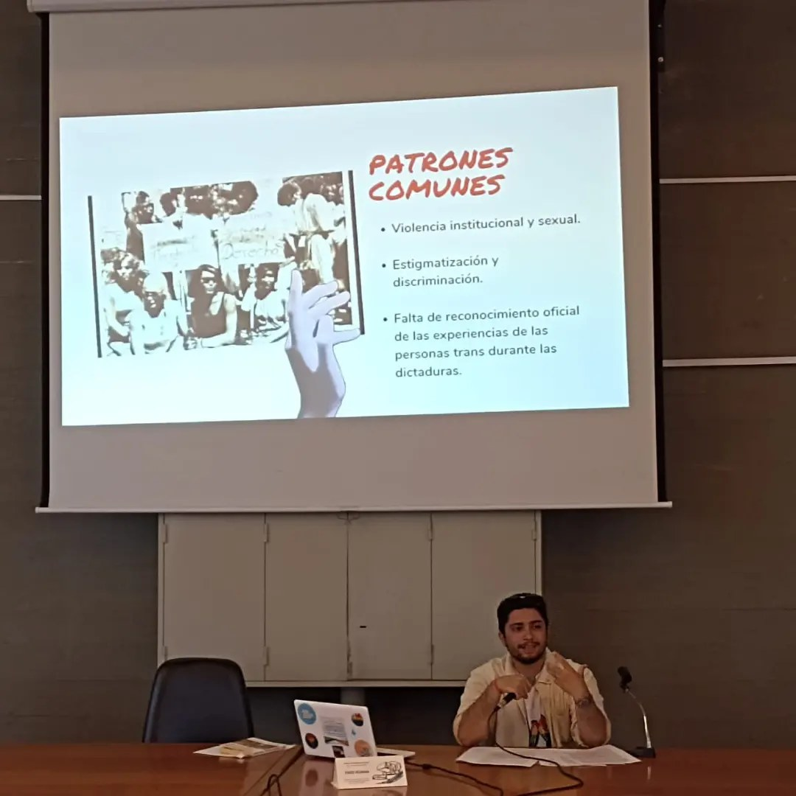
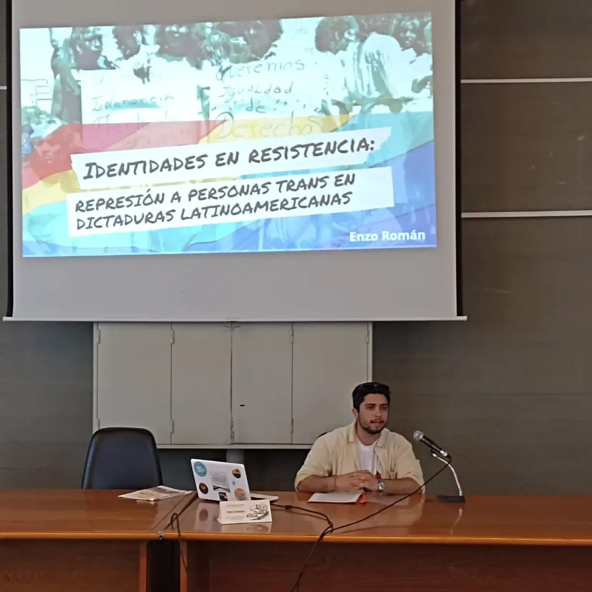
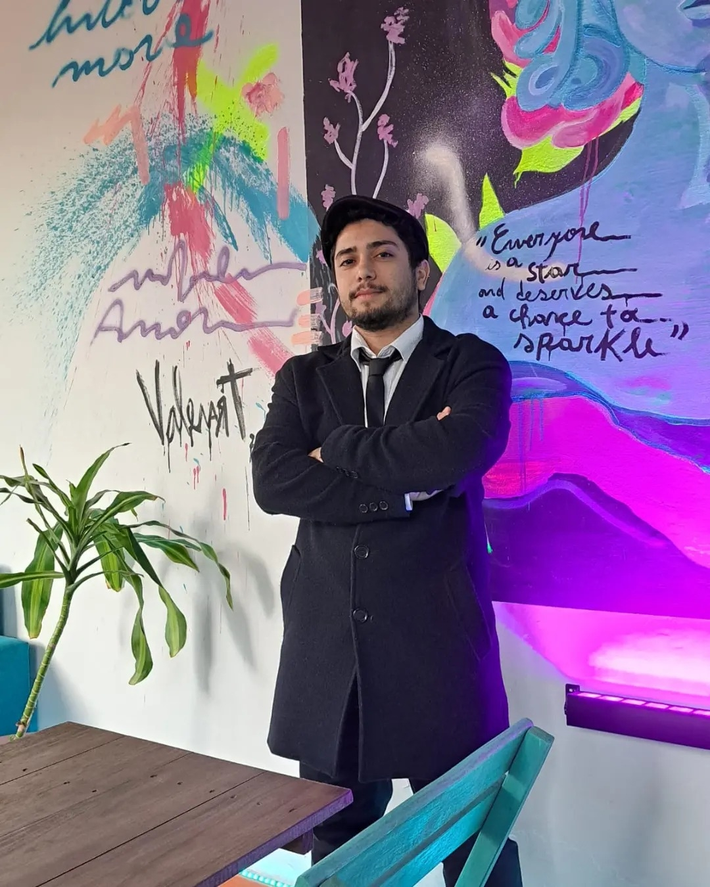
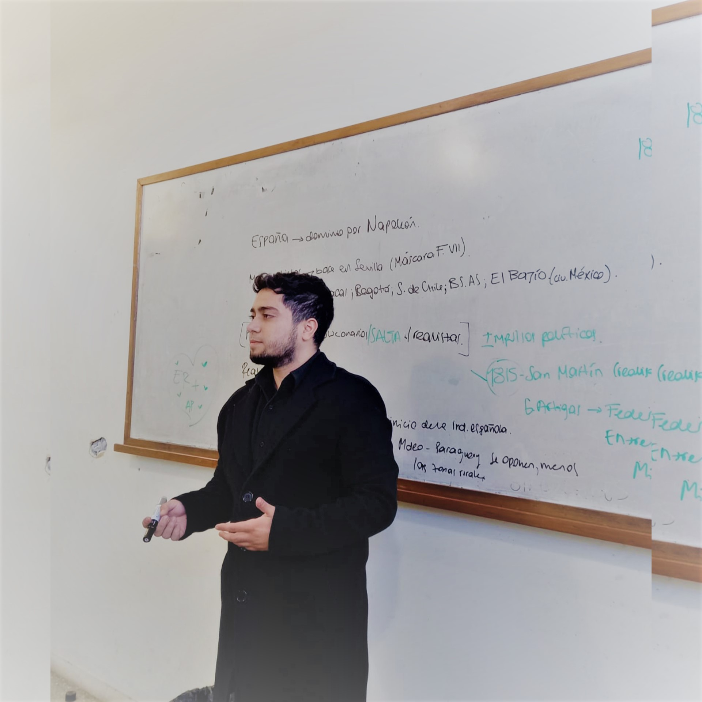

Sobre mí
Soy Enzo Román Celada, docente comprometido y apasionado por el conocimiento. Profesor egresado de Historia, especializado en programación y tecnologías educativas. Actualmente curso la Licenciatura en Relaciones Laborales en la Facultad de Derecho. Enseño Ciencias de la Computación en un liceo privado de Artigas.



